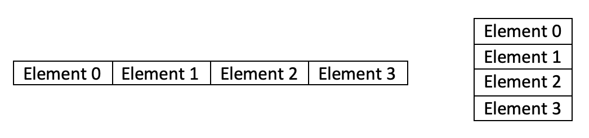
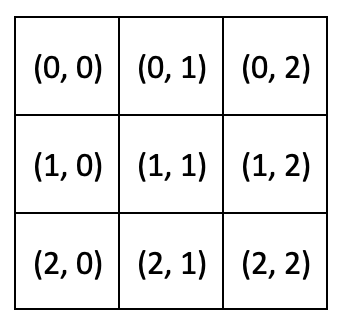

Laboratorium 2: Podstawowe biblioteki do odkrywania wiedzy¶
Efekty kształcenia laboratorium¶
dowiesz się, jakie są podstawowe i najczęściej używane biblioteki do pracy z danymi
poznasz podstawy biblioteki Numpy
poznasz podstawy biblioteki Pandas
poznasz podstawy biblioteki Matplotlib
Podstawowe biblioteki w warsztacie Data Science¶
Biblioteka |
Zastosowanie |
Sensowne alternatywy |
|---|---|---|
Numpy |
szybkie operacje macierzowe |
- |
SciPy |
zaawansowana metematyka i statystyka |
- |
Pandas |
eksploracja i analiza zbiorów danych |
- |
Matplotlib |
wizualizacja danych |
Seaborn, Plotly, Bokeh |
Scikit-learn |
preprocessing danych i uczenie maszynowe |
- |
Keras |
sieci neuronowe i uczenie głębokie |
TensorFlow, PyTorch |
Scrapy |
scrapowanie stron www |
BeautifulSoup |
Numpy¶
Numpy jest podstawową biblioteką do operacji na macierzach - ich przechowywania, transformacji, zastosowań w algebrze, statystyce itd. Stała się podstawą przetwarzania danych w środowisku Pythona - na niej bazują pozostałe biblioteki, jak Pandas, SciPy czy Scikit-learn.
Dzięki implementacji w C oraz intensywnie używanej wektoryzacji, operacje są niezwykle szybkie.
ndarray¶
Podstawowym typem danych w Numpy jest ndarray - ang. N-dimentional array (tablica N-wymiarowa).
Important
Tablice Numpy są jednorodne - tj. wszystkie elementy w tablicy muszą być tego samego typu.
Important
Tablice Numpy mają stały rozmiar. Zmiana rozmiaru tablicy usuwa stary i tworzy nowy obiekt.
Tablice jednowymiarowe¶
Tablice jednowymiarowe rozpatrywane być mogą jako pojedynczy rząd lub kolumna danych: 
Stworzyć jednowymiarową tablicę możemy na wiele sposobów:
import numpy as np
# z pythonowej listy
np.array([1, 2, 3])
array([1, 2, 3])
# z samymi zerami
# np.zeros(ELEMENTS_COUNT)
np.zeros(5)
array([0., 0., 0., 0., 0.])
# z samymi jedynkami
# np.ones(ELEMENTS_COUNT)
np.ones(4)
array([1., 1., 1., 1.])
# z kolejnymi elementami
# np.arange(START, STOP, STEP)
np.arange(5, 30, 5)
array([ 5, 10, 15, 20, 25])
# z elementami rozłożonymi liniowo
# np.linspace(START, STOP, ELEMENTS_COUNT)
np.linspace(3, 0, 5)
array([3. , 2.25, 1.5 , 0.75, 0. ])
# z losowymi elementami
# np.random.randint(START, STOP, ELEMENTS_COUNT)
np.random.randint(10, 100, 3)
array([68, 17, 81])
# pustą
# np.empty(ELEMENTS_COUNT)
np.empty(6)
array([3.10503618e+231, 3.10503618e+231, 2.18665683e-314, 2.78134232e-309,
3.10503618e+231, 3.10503618e+231])
Tablice wielowymiarowe¶
Tablice wielowymiarowe możemy rozpatrywać jako tablic jednowymiarowych względem kilku osi: 
Tablicę wielowymiarową tworzymy analogicznie do tablic jednowymiarowych:
# w przypadku metod randint, zeros, ones, empty, mozemy podać kształt tablicy
np.random.randint(10, 100, (3, 2))
array([[34, 24],
[69, 96],
[56, 63]])
# w przypadku metod arange, linspace, generujemy tablicę jednowymiarową i ją przekształcamy - więcej poniżej
np.linspace(1, 40, 8).reshape((2,4))
array([[ 1. , 6.57142857, 12.14285714, 17.71428571],
[23.28571429, 28.85714286, 34.42857143, 40. ]])
Podstawowe operacje na tablicach¶
Dostęp do elementów¶
Dla tablic jednowymiarowych możemy stosować wszystkie metody dostępu do elementów znane ze standardowych pythonowych list:
a = np.arange(10)
print(a.shape)
a
(10,)
array([0, 1, 2, 3, 4, 5, 6, 7, 8, 9])
# czwarty element
a[4]
4
# elementy od 5 do 7 (rozłącznie)
a[5:7]
array([5, 6])
# trzy elementy od tyłu
a[-3:]
array([7, 8, 9])
# co drugi element od 2 do 7 (rozłącznie)
a[2:7:2]
array([2, 4, 6])
Dla tablic wielowymiarowych, indeksowanie wygląda bardzo podobnie, z tym że indeksujemy każdą oś osobno
b = np.arange(20).reshape(4,5)
print(b.shape)
b
(4, 5)
array([[ 0, 1, 2, 3, 4],
[ 5, 6, 7, 8, 9],
[10, 11, 12, 13, 14],
[15, 16, 17, 18, 19]])
# drugi rząd, trzecia kolumna (indeksowane od zera)
b[1, 2]
7
# trzeci rząd, kolumny 2 do 4
b[2, 1:4]
array([11, 12, 13])
# wszystkie rzędy w pierwszej kolumnie:
b[:, 0]
array([ 0, 5, 10, 15])
Filtrowanie elementów¶
Bardzo przydatną funkcjonalnością NumPy jest możliwość używania warunków w dostępie do elementów:
a = np.random.randint(0, 100, 20)
a
array([55, 28, 40, 34, 16, 66, 39, 2, 40, 26, 31, 46, 77, 73, 42, 94, 40,
96, 51, 56])
# użycie tablicy w warunku logicznym zwraca tablicę elementów spełniających dany warunek
idx = a > 50
idx
array([ True, False, False, False, False, True, False, False, False,
False, False, False, True, True, False, True, False, True,
True, True])
# możemy użyć tej tablicy do pobrania elementów spełniających warunek
a[idx]
array([55, 66, 77, 73, 94, 96, 51, 56])
Wymiary i zmiany kształtu¶
Tablica składa się z elementów podzielonych wobec osi o pewnych wymiarach. Można łatwo sprawdzić te wartości przy pomocy:
a = np.random.randint(1, 10, (2,4))
# ilość elementów w tablicy
print(a.size)
# ilość osi
print(a.ndim)
# kształt tablicy - wymiary osi
print(a.shape)
8
2
(2, 4)
Można przekształcić tablicę jednowymiarową w wielowymiarową przy pomocy metody reshape:
a = np.arange(0, 8)
print(a)
print(a.shape)
print()
b = a.reshape((2,2,2,1))
print(b)
print(b.shape)
[0 1 2 3 4 5 6 7]
(8,)
[[[[0]
[1]]
[[2]
[3]]]
[[[4]
[5]]
[[6]
[7]]]]
(2, 2, 2, 1)
Tablicę wielowymiarową można prosto przekształcić w jednowymiarową przy pomocy metody flatten
c = b.flatten()
print(c)
print(c.shape)
[0 1 2 3 4 5 6 7]
(8,)
Łączenie tablic¶
Można łatwo łączyć ze sobą tablice wielowymiarowe, w zależności od pożądanej osi:
a = np.array([[1,2], [3,4]])
b = np.array([[5,6], [7,8]])
print('oryginalne\n', a)
print(a.shape, '\n')
print(b)
print(b.shape, '\n')
# pionowo
c = np.vstack((a, b))
print('połączone pionowo \n', c)
print(c.shape, '\n')
# poziomo
d = np.hstack((a, b))
print('połączone poziomo \n', d)
print(d.shape, '\n')
oryginalne
[[1 2]
[3 4]]
(2, 2)
[[5 6]
[7 8]]
(2, 2)
połączone pionowo
[[1 2]
[3 4]
[5 6]
[7 8]]
(4, 2)
połączone poziomo
[[1 2 5 6]
[3 4 7 8]]
(2, 4)
Sortowanie¶
# weźmy losową macierz 3x3
a = np.random.randint(1, 100, (3, 3))
a
array([[89, 59, 4],
[15, 91, 98],
[21, 6, 19]])
# możemy ją posortować przy pomocy funkcji np.sort()
b = np.sort(a)
b
array([[ 4, 59, 89],
[15, 91, 98],
[ 6, 19, 21]])
# defaultowe zachowanie sortuje dane w wierszach
# możemy wskazać oś sortowania przy pomocy parametru axis
print('oryginalna \n', a, '\n')
c = np.sort(a, axis=0)
print('posortowana kolumnami\n', c, '\n')
c = np.sort(a, axis=1)
print('posortowana wierszami \n', c, '\n')
oryginalna
[[89 59 4]
[15 91 98]
[21 6 19]]
posortowana kolumnami
[[15 6 4]
[21 59 19]
[89 91 98]]
posortowana wierszami
[[ 4 59 89]
[15 91 98]
[ 6 19 21]]
Podstawowe operacje matematyczne¶
Arytmetyka¶
a = np.array([[1,2], [2,2]])
b = np.array([[1,0], [0,3]])
print(a)
print(b)
[[1 2]
[2 2]]
[[1 0]
[0 3]]
# dodawanie elementów macierzy
a + b
array([[2, 2],
[2, 5]])
# mnożenie elementów macierzy
a * b
array([[1, 0],
[0, 6]])
# mnożenie przez stałą
a * 5
array([[ 5, 10],
[10, 10]])
Agregacje¶
a = np.arange(10)
a
array([0, 1, 2, 3, 4, 5, 6, 7, 8, 9])
# sumowanie
a.sum()
45
# średnia
a.mean()
4.5
# maksimum (minimum analogicznie)
a.max()
9
Powyższe funkcje przyjmują także argument axis określający w której osi wykonać agregację:
a = np.random.randint(1,10, (2,2))
a
array([[3, 4],
[2, 2]])
a.sum(axis=0)
array([5, 6])
a.mean(axis=1)
array([3.5, 2. ])
Algebra liniowa¶
# mnożenie macierzowe
a @ b
array([[ 3, 12],
[ 2, 6]])
# transpozycja macierzy
a.transpose()
array([[3, 2],
[4, 2]])
# odwrotność macierzy
np.linalg.inv(a)
array([[-1. , 2. ],
[ 1. , -1.5]])
# wektor i wartości własne macierzy
np.linalg.eig(a)
(array([ 5.37228132, -0.37228132]),
array([[ 0.86011126, -0.76454754],
[ 0.51010647, 0.64456735]]))
See also
Wyżej wymienione mechanizmy to jedynie podstawowe możliwości NumPy. W celu zdobycia szerszej wiedzy z tego zakresu odsyłamy do tego poradnika.
Pandas¶
Pandas oferuje wygodny interfejs, struktury danych i metody do obsługi poetykietowanych zbiorów danych. Jest to podstawowa biblioteka do manipulacji danymi w większości projektów Data Science.
Struktury danych¶
Series¶
Podstawową strukturą danych Pandasa jest Series. Można ją traktować jako jednowymiarową kolumnę danych, z indeksami.
import pandas as pd
s = pd.Series([1, 31, 5, 12, 6, 18])
s
0 1
1 31
2 5
3 12
4 6
5 18
dtype: int64
Alternatywnie, możemy podać też indeksy:
s = pd.Series(np.random.randint(1, 10, 5), index=['a', 'b', 'c', 'd', 'e'])
s
a 8
b 2
c 8
d 1
e 8
dtype: int64
DataFrame¶
DataFrame jest dwuwymiarową strukturą, rozumianą jako złożenie serii (kolumn) danych.
df = pd.DataFrame({
"one": pd.Series([1.0, 2.0, 3.0], index=["a", "b", "c"]),
"two": pd.Series([7.0, 6.0, 5.0, 4.0], index=["a", "b", "c", "d"]),
})
df
| one | two | |
|---|---|---|
| a | 1.0 | 7.0 |
| b | 2.0 | 6.0 |
| c | 3.0 | 5.0 |
| d | NaN | 4.0 |
See also
DataFrame może być stworzony na wiele różnych sposóbów - przy pomocy list, dictów, tupli itd. Po więcej informacji i przykładów tworzenia DataFrame odsyłamy (do dokumentacji)[https://pandas.pydata.org/docs/user_guide/dsintro.html#dataframe]
Wczytywanie CSV¶
Pandas udostępnia prosty interfejs do wczytania zbioru danych z pliku. Wczytajmy zbiór danych Iris Flowers:
df = pd.read_csv('../docs/lab2/iris.data')
df.head()
| sepal length | sepal width | petal length | petal width | class | |
|---|---|---|---|---|---|
| 0 | 5.1 | 3.5 | 1.4 | 0.2 | Iris-setosa |
| 1 | 4.9 | 3.0 | 1.4 | 0.2 | Iris-setosa |
| 2 | 4.7 | 3.2 | 1.3 | 0.2 | Iris-setosa |
| 3 | 4.6 | 3.1 | 1.5 | 0.2 | Iris-setosa |
| 4 | 5.0 | 3.6 | 1.4 | 0.2 | Iris-setosa |
Hint
Zapis DataFrame do formatu CSV jest równie prosty - df.to_csv(PATH)
Hint
Analogicznie można wczytać i zapisać inne formaty danych - JSON, Excel, SQL, HDF i inne
Dostęp do elementów¶
# przy pomocy nazwy kolumny, pobieramy całą serię
df["petal width"]
0 0.2
1 0.2
2 0.2
3 0.2
4 0.2
...
145 2.3
146 1.9
147 2.0
148 2.3
149 1.8
Name: petal width, Length: 150, dtype: float64
# by pobrać dany wiersz, posługujemy się metodami:
# - df.loc[LABEL] - by pobrać wg etykiety indeksu
#. - df.iloc[NUMBER] - by pobrac wg. numeru wiersza
df.iloc[13]
sepal length 4.3
sepal width 3.0
petal length 1.1
petal width 0.1
class Iris-setosa
Name: 13, dtype: object
# możemy także używac zakresów wierszy w stylu NumPy
df[12:15]
| sepal length | sepal width | petal length | petal width | class | |
|---|---|---|---|---|---|
| 12 | 4.8 | 3.0 | 1.4 | 0.1 | Iris-setosa |
| 13 | 4.3 | 3.0 | 1.1 | 0.1 | Iris-setosa |
| 14 | 5.8 | 4.0 | 1.2 | 0.2 | Iris-setosa |
# Pandas implementuje także filtrowanie boolowskie znane z NumPy
df[df['class'] == 'Iris-setosa']
| sepal length | sepal width | petal length | petal width | class | |
|---|---|---|---|---|---|
| 0 | 5.1 | 3.5 | 1.4 | 0.2 | Iris-setosa |
| 1 | 4.9 | 3.0 | 1.4 | 0.2 | Iris-setosa |
| 2 | 4.7 | 3.2 | 1.3 | 0.2 | Iris-setosa |
| 3 | 4.6 | 3.1 | 1.5 | 0.2 | Iris-setosa |
| 4 | 5.0 | 3.6 | 1.4 | 0.2 | Iris-setosa |
| 5 | 5.4 | 3.9 | 1.7 | 0.4 | Iris-setosa |
| 6 | 4.6 | 3.4 | 1.4 | 0.3 | Iris-setosa |
| 7 | 5.0 | 3.4 | 1.5 | 0.2 | Iris-setosa |
| 8 | 4.4 | 2.9 | 1.4 | 0.2 | Iris-setosa |
| 9 | 4.9 | 3.1 | 1.5 | 0.1 | Iris-setosa |
| 10 | 5.4 | 3.7 | 1.5 | 0.2 | Iris-setosa |
| 11 | 4.8 | 3.4 | 1.6 | 0.2 | Iris-setosa |
| 12 | 4.8 | 3.0 | 1.4 | 0.1 | Iris-setosa |
| 13 | 4.3 | 3.0 | 1.1 | 0.1 | Iris-setosa |
| 14 | 5.8 | 4.0 | 1.2 | 0.2 | Iris-setosa |
| 15 | 5.7 | 4.4 | 1.5 | 0.4 | Iris-setosa |
| 16 | 5.4 | 3.9 | 1.3 | 0.4 | Iris-setosa |
| 17 | 5.1 | 3.5 | 1.4 | 0.3 | Iris-setosa |
| 18 | 5.7 | 3.8 | 1.7 | 0.3 | Iris-setosa |
| 19 | 5.1 | 3.8 | 1.5 | 0.3 | Iris-setosa |
| 20 | 5.4 | 3.4 | 1.7 | 0.2 | Iris-setosa |
| 21 | 5.1 | 3.7 | 1.5 | 0.4 | Iris-setosa |
| 22 | 4.6 | 3.6 | 1.0 | 0.2 | Iris-setosa |
| 23 | 5.1 | 3.3 | 1.7 | 0.5 | Iris-setosa |
| 24 | 4.8 | 3.4 | 1.9 | 0.2 | Iris-setosa |
| 25 | 5.0 | 3.0 | 1.6 | 0.2 | Iris-setosa |
| 26 | 5.0 | 3.4 | 1.6 | 0.4 | Iris-setosa |
| 27 | 5.2 | 3.5 | 1.5 | 0.2 | Iris-setosa |
| 28 | 5.2 | 3.4 | 1.4 | 0.2 | Iris-setosa |
| 29 | 4.7 | 3.2 | 1.6 | 0.2 | Iris-setosa |
| 30 | 4.8 | 3.1 | 1.6 | 0.2 | Iris-setosa |
| 31 | 5.4 | 3.4 | 1.5 | 0.4 | Iris-setosa |
| 32 | 5.2 | 4.1 | 1.5 | 0.1 | Iris-setosa |
| 33 | 5.5 | 4.2 | 1.4 | 0.2 | Iris-setosa |
| 34 | 4.9 | 3.1 | 1.5 | 0.1 | Iris-setosa |
| 35 | 5.0 | 3.2 | 1.2 | 0.2 | Iris-setosa |
| 36 | 5.5 | 3.5 | 1.3 | 0.2 | Iris-setosa |
| 37 | 4.9 | 3.1 | 1.5 | 0.1 | Iris-setosa |
| 38 | 4.4 | 3.0 | 1.3 | 0.2 | Iris-setosa |
| 39 | 5.1 | 3.4 | 1.5 | 0.2 | Iris-setosa |
| 40 | 5.0 | 3.5 | 1.3 | 0.3 | Iris-setosa |
| 41 | 4.5 | 2.3 | 1.3 | 0.3 | Iris-setosa |
| 42 | 4.4 | 3.2 | 1.3 | 0.2 | Iris-setosa |
| 43 | 5.0 | 3.5 | 1.6 | 0.6 | Iris-setosa |
| 44 | 5.1 | 3.8 | 1.9 | 0.4 | Iris-setosa |
| 45 | 4.8 | 3.0 | 1.4 | 0.3 | Iris-setosa |
| 46 | 5.1 | 3.8 | 1.6 | 0.2 | Iris-setosa |
| 47 | 4.6 | 3.2 | 1.4 | 0.2 | Iris-setosa |
| 48 | 5.3 | 3.7 | 1.5 | 0.2 | Iris-setosa |
| 49 | 5.0 | 3.3 | 1.4 | 0.2 | Iris-setosa |
Sortowanie¶
# DataFrame możemy posortować wg indeksów
df.sort_index(axis=0, ascending=False)
| sepal length | sepal width | petal length | petal width | class | |
|---|---|---|---|---|---|
| 149 | 5.9 | 3.0 | 5.1 | 1.8 | Iris-virginica |
| 148 | 6.2 | 3.4 | 5.4 | 2.3 | Iris-virginica |
| 147 | 6.5 | 3.0 | 5.2 | 2.0 | Iris-virginica |
| 146 | 6.3 | 2.5 | 5.0 | 1.9 | Iris-virginica |
| 145 | 6.7 | 3.0 | 5.2 | 2.3 | Iris-virginica |
| ... | ... | ... | ... | ... | ... |
| 4 | 5.0 | 3.6 | 1.4 | 0.2 | Iris-setosa |
| 3 | 4.6 | 3.1 | 1.5 | 0.2 | Iris-setosa |
| 2 | 4.7 | 3.2 | 1.3 | 0.2 | Iris-setosa |
| 1 | 4.9 | 3.0 | 1.4 | 0.2 | Iris-setosa |
| 0 | 5.1 | 3.5 | 1.4 | 0.2 | Iris-setosa |
150 rows × 5 columns
# lub według kolumn
df.sort_index(axis=1)
| class | petal length | petal width | sepal length | sepal width | |
|---|---|---|---|---|---|
| 0 | Iris-setosa | 1.4 | 0.2 | 5.1 | 3.5 |
| 1 | Iris-setosa | 1.4 | 0.2 | 4.9 | 3.0 |
| 2 | Iris-setosa | 1.3 | 0.2 | 4.7 | 3.2 |
| 3 | Iris-setosa | 1.5 | 0.2 | 4.6 | 3.1 |
| 4 | Iris-setosa | 1.4 | 0.2 | 5.0 | 3.6 |
| ... | ... | ... | ... | ... | ... |
| 145 | Iris-virginica | 5.2 | 2.3 | 6.7 | 3.0 |
| 146 | Iris-virginica | 5.0 | 1.9 | 6.3 | 2.5 |
| 147 | Iris-virginica | 5.2 | 2.0 | 6.5 | 3.0 |
| 148 | Iris-virginica | 5.4 | 2.3 | 6.2 | 3.4 |
| 149 | Iris-virginica | 5.1 | 1.8 | 5.9 | 3.0 |
150 rows × 5 columns
# a także wg wartości
df.sort_values(by="petal width")
| sepal length | sepal width | petal length | petal width | class | |
|---|---|---|---|---|---|
| 32 | 5.2 | 4.1 | 1.5 | 0.1 | Iris-setosa |
| 13 | 4.3 | 3.0 | 1.1 | 0.1 | Iris-setosa |
| 37 | 4.9 | 3.1 | 1.5 | 0.1 | Iris-setosa |
| 9 | 4.9 | 3.1 | 1.5 | 0.1 | Iris-setosa |
| 12 | 4.8 | 3.0 | 1.4 | 0.1 | Iris-setosa |
| ... | ... | ... | ... | ... | ... |
| 140 | 6.7 | 3.1 | 5.6 | 2.4 | Iris-virginica |
| 114 | 5.8 | 2.8 | 5.1 | 2.4 | Iris-virginica |
| 100 | 6.3 | 3.3 | 6.0 | 2.5 | Iris-virginica |
| 144 | 6.7 | 3.3 | 5.7 | 2.5 | Iris-virginica |
| 109 | 7.2 | 3.6 | 6.1 | 2.5 | Iris-virginica |
150 rows × 5 columns
Apply¶
Niezwykle przydatną funkcjonalnością jest możliwość aplikowania funkcji do danych. Przydaje się to np. do tworzenia nowych kolumn:
df['high sepal ratio'] = df.apply(lambda x: (x['sepal length'] / x['sepal width']) > 2, axis=1)
df
| sepal length | sepal width | petal length | petal width | class | high sepal ratio | |
|---|---|---|---|---|---|---|
| 0 | 5.1 | 3.5 | 1.4 | 0.2 | Iris-setosa | False |
| 1 | 4.9 | 3.0 | 1.4 | 0.2 | Iris-setosa | False |
| 2 | 4.7 | 3.2 | 1.3 | 0.2 | Iris-setosa | False |
| 3 | 4.6 | 3.1 | 1.5 | 0.2 | Iris-setosa | False |
| 4 | 5.0 | 3.6 | 1.4 | 0.2 | Iris-setosa | False |
| ... | ... | ... | ... | ... | ... | ... |
| 145 | 6.7 | 3.0 | 5.2 | 2.3 | Iris-virginica | True |
| 146 | 6.3 | 2.5 | 5.0 | 1.9 | Iris-virginica | True |
| 147 | 6.5 | 3.0 | 5.2 | 2.0 | Iris-virginica | True |
| 148 | 6.2 | 3.4 | 5.4 | 2.3 | Iris-virginica | False |
| 149 | 5.9 | 3.0 | 5.1 | 1.8 | Iris-virginica | False |
150 rows × 6 columns
Grupowanie¶
# grupowanie ma na celu agregacje danych wobec pewnej funkcji
df.groupby('class').mean()
| sepal length | sepal width | petal length | petal width | high sepal ratio | |
|---|---|---|---|---|---|
| class | |||||
| Iris-setosa | 5.006 | 3.418 | 1.464 | 0.244 | 0.00 |
| Iris-versicolor | 5.936 | 2.770 | 4.260 | 1.326 | 0.76 |
| Iris-virginica | 6.588 | 2.974 | 5.552 | 2.026 | 0.82 |
# można także grupować wg wielu wartości
df.groupby(['class', 'high sepal ratio']).mean()
| sepal length | sepal width | petal length | petal width | ||
|---|---|---|---|---|---|
| class | high sepal ratio | ||||
| Iris-setosa | False | 5.006000 | 3.418000 | 1.464000 | 0.244000 |
| Iris-versicolor | False | 5.775000 | 3.050000 | 4.308333 | 1.458333 |
| True | 5.986842 | 2.681579 | 4.244737 | 1.284211 | |
| Iris-virginica | False | 6.088889 | 3.133333 | 5.300000 | 2.144444 |
| True | 6.697561 | 2.939024 | 5.607317 | 2.000000 |
See also
Wyżej wymienione mechanizmy to jedynie podstawowe możliwości Pandas. W celu zdobycia szerszej wiedzy z tego zakresu odsyłamy do tego poradnika.
Matplotlib¶
Jest to podstawowa biblioteka do rysowania wykresów i wizualizacji danych. Matplotlib jest stale rozwijaną biblioteką, która ideowo dziedziczy z Matlaba, stąd część zastosowanych rozwiązań może nie być do końca intuicyjna dla programisty Pythona
Instalujemy standardowo z pip:
pip install matplotlib
Ogólna idea rozwiązania¶
Wyróżniamy następujące elementy:
Figure- można o nim myśleć jak o przestrzeni na której rysowane będą konkretne wykresyAxes- konkretny wykres zawierający osie, legendę, tytuł itd.Axis- konkretna oś wykresu
Tworzenie wykresu¶
Tworzenie wykresu obsługuje moduł PyPlot:
import matplotlib.pyplot as plt
plt.plot([1, 2, 3, 4], [13, 16, 18, 23])
plt.show()
Wykres możemy prosto opisać i dostosować do własnych potrzeb:
plt.figure(figsize = (16, 4))
plt.plot(np.arange(30), np.geomspace(1, 100, 30))
plt.title('Przyrost wiedzy o przetwarzaniu danych')
plt.xlabel('Czas zajęć [h]')
plt.ylabel('Wiedza [%]')
plt.show()
Podstawowa konfiguracja wykresu pozwala też umieszczac na nim kilka serii danych. Przydaje się wtedy umieścić legendę
plt.figure(figsize = (16, 4))
plt.plot(np.arange(30), np.geomspace(20, 100, 30), label='studenci')
plt.plot(np.arange(30), np.linspace(60, 90, 30), label='prowadzący')
plt.title('Przyrost wiedzy o przetwarzaniu danych')
plt.xlabel('Czas zajęć [h]')
plt.ylabel('Wiedza [%]')
plt.legend()
plt.show()
Podstawowa konfiguracja wyglądu wykresu¶
Wygląd serii danych określamy podając trzyliterowy string w formacie [marker][kolor][linia] po serii, w którym określamy kształt punktów danych, rodzaj linii i kolor. Przykładowo:
og-- zielone kółka połączone linią ciągłą^r:- czerwone trójkąty połączone linią kropkowaną
plt.figure(figsize = (16, 4))
plt.plot(np.arange(30), np.geomspace(20, 100, 30), 'og-', label='studenci')
plt.plot(np.arange(30), np.linspace(60, 90, 30), '^r:', label='prowadzący')
plt.title('Przyrost wiedzy o przetwarzaniu danych')
plt.xlabel('Czas zajęć [h]')
plt.ylabel('Wiedza [%]')
plt.legend()
plt.show()
See also
Więcej stylów i kombinacji w sekcji Notes dokumentacji
Typy wykresów¶
# wykres słupkowy
plt.bar(['A', 'B', 'C', 'D', 'E'], np.random.randint(1, 35, 5))
plt.show()
# wykres kołowy
plt.pie([30, 70], labels=["niebieska część", "pomarańczowa część"])
plt.show()
# histogram
plt.hist(np.random.randn(1000))
plt.show()
# wykres punktowy
plt.scatter(np.random.rand(30), np.random.randn(30))
plt.show()
Wiele wykresów w jednej przestrzeni¶
Częstym przypadkiem jest chęć umiejscowienia kilku różych wykresów na jednym Figure. Można to uczynić przy pomocy mechanizmu subplot
# użyjemy wczytanego na potrzeby przykladów z Pandasem zbioru Iris
df.head(1)
| sepal length | sepal width | petal length | petal width | class | high sepal ratio | |
|---|---|---|---|---|---|---|
| 0 | 5.1 | 3.5 | 1.4 | 0.2 | Iris-setosa | False |
# tworzymy subplot składający się z jednego rzędu i trzech kolumn
fig, (ax1, ax2, ax3) = plt.subplots(nrows=1, ncols=3, figsize=(16,5))
# tworzymy wykres punktowy pokazujący zależność długości do szerokości "działki kielicha" (sepal)
# z kolorami oznaczającymi szerokość płatka
scatter = ax1.scatter(
df['sepal length'],
df['sepal width'],
c=df['petal width'],
cmap='RdYlGn'
)
plt.colorbar(scatter, ax=ax1, format='%d')
# tworzymy histogramy długości płatka i działki
ax2.hist(df['petal length'], label='petal')
ax2.hist(df['sepal length'], label='sepal')
ax2.legend()
# tworzymy wykres kołowy ilości klas
ax3.pie(
df.groupby('class').count().to_numpy()[:,0],
labels=df.groupby('class').count().index
)
plt.show()
Wykresy z użyciem metod Pandas¶
Pandas udostępnia prosty interfejs rysowania wykresów Matplotlib bezpośrednio z DataFrame. Dzięki temu możemy prościej zwizualizowac wartości numeryczne i zaobserwować charakterystykę zbioru danych.
df.plot()
<AxesSubplot:>
df.plot(kind='bar', subplots=True, figsize=(16, 6))
array([<AxesSubplot:title={'center':'sepal length'}>,
<AxesSubplot:title={'center':'sepal width'}>,
<AxesSubplot:title={'center':'petal length'}>,
<AxesSubplot:title={'center':'petal width'}>], dtype=object)
from pandas.plotting import scatter_matrix
scatter_matrix(df, alpha=0.5, figsize=(16, 16), diagonal="kde");
See also
Więcej o możliwościach Pandas w kontekście generowania wykresów - w dokumentacji
Zadania¶
1.